original

step 1

step 2

This assignment is organized into two main themes: parametric surfaces (Bézier) and triangle mesh processing.
In Parts 1–2, I implemented evaluation and visualization for Bézier curves/surfaces. The key technique is de Casteljau’s algorithm, which repeatedly performs linear interpolation between adjacent control points to generate lower-level point sets until a single point remains. That final point is the curve value at parameter
𝑡; applying the same idea in two parameter directions evaluates Bézier surfaces. This section helped me connect geometric interpolation with smooth shape generation and practice interactive debugging/visualization.
In Section II (Parts 3–6), I worked with triangle meshes using the half-edge data structure for efficient connectivity traversal and local remeshing. In Part 3, I computed area-weighted vertex normals for Phong shading, producing smoother shading than flat per-face normals. In Parts 4–5, I implemented local remeshing operations (edge flip and edge split), with the main challenge being to correctly reassign half-edge pointers (next/twin/vertex/edge/face) to preserve manifold connectivity. Finally, in Part 6, I implemented Loop subdivision upsampling: I first computed target positions for old vertices and edge-split vertices using the Loop weighting rules, then split all original edges, flipped the appropriate new edges that connect an old vertex and a new vertex, and finally updated vertex positions. This pipeline converts a coarse mesh into a smoother, higher-resolution approximation.
Overall, the assignment ties together geometry (positions/normals) and topology (mesh connectivity): the first half focuses on continuous parametric evaluation, while the second half emphasizes discrete mesh traversal and local topology edits, culminating in a complete subdivision-and-smoothing workflow via Loop subdivision.
de Casteljau’s algorithm evaluates a Bézier curve by repeatedly applying linear interpolation between adjacent control points. Given control points \(P_0, P_1, \dots, P_n\) and a parameter \(t \in [0,1]\), one “level” of the algorithm computes a new set of points \[ P_i^{(1)} = (1-t)P_i + tP_{i+1}, \quad i = 0,\dots,n-1. \] This reduces the number of points by one. The same interpolation is then applied to the new set, producing \(P_i^{(2)}\), and the process continues until only a single point remains. That final point is the point on the Bézier curve at parameter \(t\). Varying \(t\) traces out a smooth curve that always passes through the first and last control points.
original
step 1
step 2
step 3

step 4

step 5

Finally

different t

To evaluate a Bézier surface patch at parameters \((u,v)\), I extend de Casteljau’s algorithm by applying the 1D curve evaluation twice. The control points form a 2D grid \(\{P_{i,j}\}\). First, I treat each row \(\{P_{i,0}, \ldots, P_{i,n}\}\) as a Bézier curve and run de Casteljau at parameter \(u\), producing one point \(Q_i(u)\) per row. These points \(\{Q_i(u)\}\) form a new 1D set of control points. Then I run de Casteljau again on \(\{Q_i(u)\}\) at parameter \(v\) to get the final surface point \(S(u,v)\). In code, `evaluate1D` repeatedly calls `evaluateStep` until one point remains, and `evaluate(u,v)` evaluates each row at \(u\) and then evaluates the resulting points at \(v\).

In `Vertex::normal()`, I compute an area-weighted vertex normal by summing the (area-scaled) face normals of all triangles incident to the vertex and then normalizing the result. Using the half-edge structure, I start from an outgoing half-edge `h = halfedge()` and loop around the vertex via `h = h->twin()->next()`, which visits each neighboring face exactly once. For each non-boundary face, I gather its three vertices using `h->vertex()`, `h->next()->vertex()`, and `h->next()->next()->vertex()`, and form the edge vectors `p1 - p0` and `p2 - p0`. Their cross product `cross(p1 - p0, p2 - p0)` points in the face’s normal direction, and its magnitude equals twice the triangle’s area, so it naturally provides area weighting without computing the area explicitly. I add this cross product into an accumulator `sum` for all incident faces, and finally return `sum.unit()` to produce a unit-length normal suitable for Phong shading. This produces smoother shading than flat shading because each vertex normal represents the averaged local surface orientation.
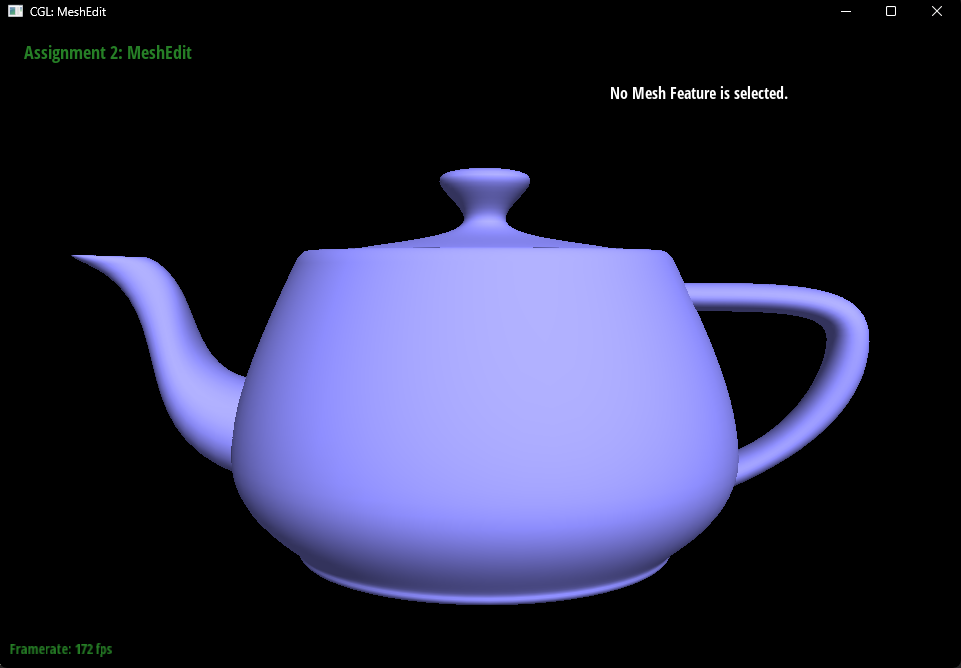
In Part 4, I implemented the edge flip operation in HalfedgeMesh::flipEdge(EdgeIter e0) by rewiring pointers in the half-edge data structure without creating or deleting any mesh elements. Given an interior edge (e0), I first obtain its two halfedges h0 and h3 = h0->twin(), as well as the four surrounding halfedges (h1, h2 in the first triangle and h4, h5 in the second triangle). From these halfedges, I identify the four vertices of the local configuration (the two endpoints of the original edge and the two opposite vertices). If the edge is on the boundary, I immediately return without flipping.
To perform the flip, I change the “source” vertices of the two halfedges on the flipped edge so that the edge connects the two previously opposite vertices (i.e., replace the diagonal). Then I update the next pointers to form the two new face cycles (each face remains a 3-cycle of halfedges). After the connectivity is updated, I reassign the face pointer for the involved halfedges, and set halfedge() pointers for the two faces, the flipped edge, and the affected vertices to ensure every element still references a valid incident halfedge. Since an edge flip is purely local, the routine runs in constant time and only modifies the pointers in this one-ring neighborhood.
Debugging-wise, the most helpful trick was to save all relevant local iterators (halfedges, vertices, faces) into temporary variables before changing any pointers. Early on, I tried to rewire pointers “in place” and easily lost track of which halfedge still pointed where, which led to incorrect cycles and occasional crashes during mesh traversal. Keeping a consistent naming scheme (e.g., labeling the six halfedges around the two triangles) and double-checking the two new 3-cycles after rewiring made the process much more reliable. When something still looked wrong, repeatedly flipping the same edge (pressing F multiple times) was a quick sanity check: a correct implementation should remain stable and never create holes or break manifold connectivity.
Original
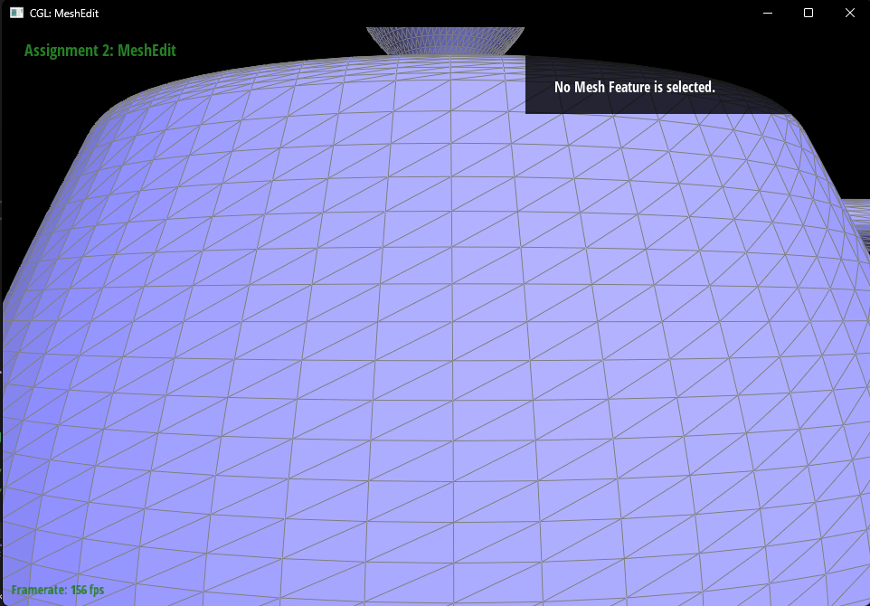
flipEdge
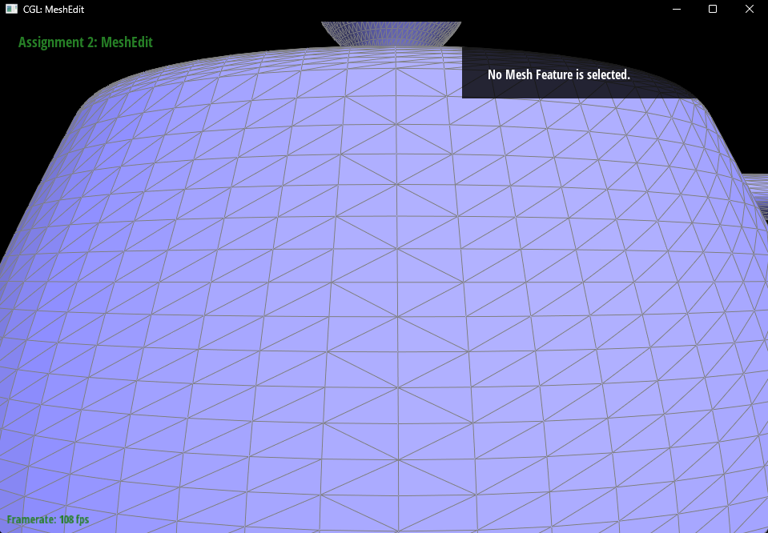
In Part 5, I implemented the edge split operation in HalfedgeMesh::splitEdge(EdgeIter e0) by inserting a new vertex at the midpoint of an interior edge and re-triangulating the two incident triangles into four triangles. I first obtain the two halfedges of the target edge (h0 and its twin h3) and immediately ignore boundary cases (either the edge itself or one of its adjacent faces is on the boundary). From the local neighborhood, I collect the six halfedges around the two triangles (h0..h5) and identify the four original vertices: the two endpoints of the edge being split and the two opposite vertices of the adjacent triangles.
To perform the split, I create the minimum set of new mesh elements required by the operation: one new vertex vm, two new faces (so the original two faces become four total), three new edges, and six new halfedges to represent the three new connections from vm to the surrounding vertices. I set vm->position to the midpoint of the original edge endpoints. Next, I establish the twin relationships for each pair of newly created halfedges, then rewire the next pointers so that each of the four resulting triangles has a consistent 3-cycle of halfedges. After the cycles are correct, I assign the face pointer of every involved halfedge to the appropriate face, and assign the edge pointer so that each edge owns one of its two halfedges.
Finally, I update the halfedge() references for all affected vertices, faces, and edges so that each element still points to a valid incident halfedge. I also set the isNew flags to distinguish newly created elements from original ones, which is necessary later for Loop subdivision. The function returns the iterator to the newly inserted midpoint vertex vm, and I ensure vm->halfedge() points along the originally split edge as required.
Debugging-wise, the most important strategy was to treat the split as a purely local “rewiring” problem: list all elements in the two-triangle neighborhood before the split, list the elements after the split (four triangles), and then explicitly set every pointer (next/twin/vertex/edge/face and each element’s halfedge() reference). This reduced subtle pointer mistakes that can otherwise lead to broken cycles or crashes during mesh traversal.
Original
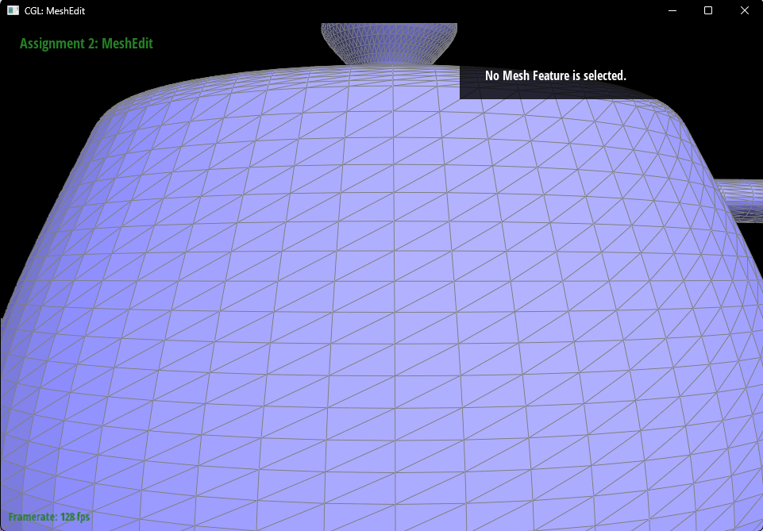
Split
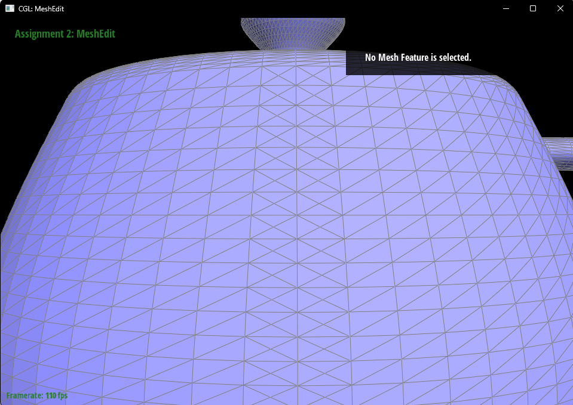
Split + Flip
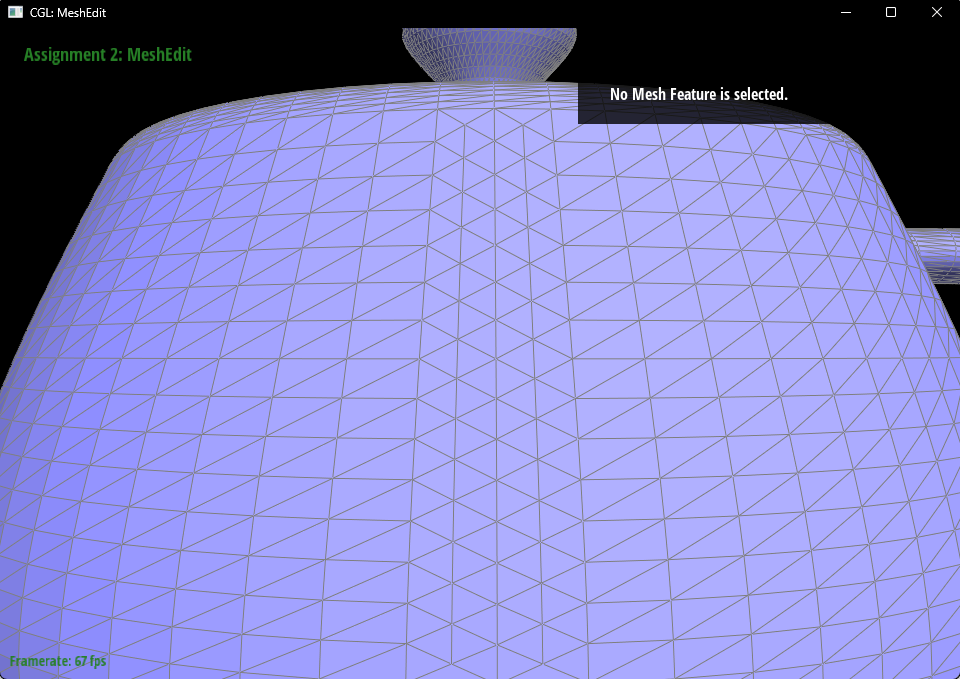
Implementation Overview
I implemented Loop subdivision using the recommended three-phase structure: precompute positions on the original mesh, modify connectivity via splits/flips, then commit the new positions.
Precompute new positions for old vertices (Vertex::newPosition).
For every original (non-boundary) vertex \(v\), I compute its updated position using the Loop vertex rule based on its one-ring neighbors in the original mesh:
\[
\mathbf{p}'=(1-nu)\mathbf{p}+u\sum_{i=1}^{n}\mathbf{p}_i,
\]
where \(n\) is the vertex degree, \(\mathbf{p}\) is the original position, and \(\mathbf{p}_i\) are the original neighbor positions. I use \(u=\frac{3}{16}\) for \(n=3\), otherwise \(u=\frac{3}{8n}\). I mark all original vertices with isNew = false.
Precompute new positions for edge midpoints (Edge::newPosition).
For every original interior edge shared by two triangles, I gather the four vertices \((A,B,C,D)\), where \(A,B\) are the edge endpoints and \(C,D\) are the two opposite vertices across the adjacent faces. I compute the Loop edge rule:
\[
\mathbf{p}_{new}=\tfrac{3}{8}(\mathbf{A}+\mathbf{B})+\tfrac{1}{8}(\mathbf{C}+\mathbf{D}),
\]
and store it in Edge::newPosition. I also mark original edges as isNew = false.
Split every original edge exactly once.
To avoid repeatedly splitting edges that are created during subdivision, I first copy the iterators of the original edges into a temporary list, then call splitEdge on each interior original edge. The newly inserted vertex \(m\) is marked with isNew = true, and I assign m->newPosition = e->newPosition from the precomputed value.
Flip new edges that connect an old vertex and a new vertex.
After splitting, I iterate over edges and flip only those edges that are newly created and have exactly one endpoint marked isNew. This matches the standard “split-then-flip” rule for generating the 4-to-1 (4-1) subdivision connectivity, while avoiding flipping the new edges that lie along the boundaries of the subdivided triangles.
Commit positions.
Finally, I assign v->position = v->newPosition for every vertex, applying the precomputed smoothing to old vertices and the precomputed Loop positions to new vertices.
Two techniques were especially helpful:
Separation of geometry from topology: I computed all newPosition values before splitting/flipping so that all weights are based on the original mesh neighborhood (otherwise later computations would accidentally use already-updated positions or a changed one-ring).
Store original edges before splitting: I pushed all original EdgeIters into a vector first, then iterated that vector to split. This prevents an infinite loop where newly created edges would also be split.
Observations: Sharp Corners, Edges, and Smoothing
Loop subdivision quickly smooths sharp features. On meshes with sharp corners (e.g., a cube), the corners become round after even one iteration. This happens because the old vertex update rule is a weighted average of the one-ring neighborhood, which pulls corner vertices inward and smooths creases and corners rather than preserving them.
Cube Asymmetry After Repeated Subdivision (Why It Happens)
When I repeatedly applied Loop subdivision to dae/cube.dae, I observed that the cube can become slightly asymmetric. The main reason is that Loop subdivision depends not only on geometry, but also on the mesh connectivity / triangulation. Each square face must be triangulated by choosing a diagonal. If the diagonal pattern across faces is not perfectly symmetric, then corresponding corners/edges do not have identical one-ring neighborhoods. Because both the edge rule (which depends on the opposite vertices \(C,D\)) and the vertex rule (which depends on the one-ring neighbors) are topology-dependent, a non-symmetric triangulation produces slightly different updates at locations that “should” be symmetric geometrically. Over multiple iterations, this small bias can persist and become noticeable as asymmetry.
Pre-processing to Improve Symmetry
To reduce the asymmetry, I pre-processed the cube by splitting the face diagonals (i.e., splitting the “single diagonal” edges created by triangulation). This helps because it reduces the influence of any one diagonal choice dominating the local neighborhood and makes the connectivity around symmetric regions more uniform. With this pre-splitting, the one-ring neighborhoods at symmetric locations become closer to isomorphic, so the Loop weights are applied more consistently across the cube, alleviating the slight asymmetry in later subdivisions.
Original
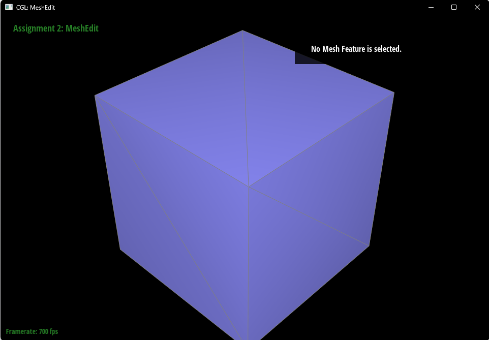
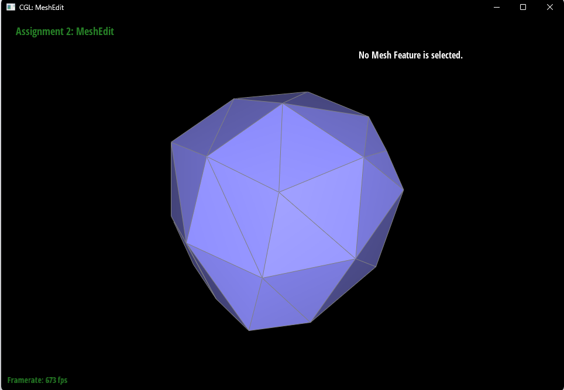
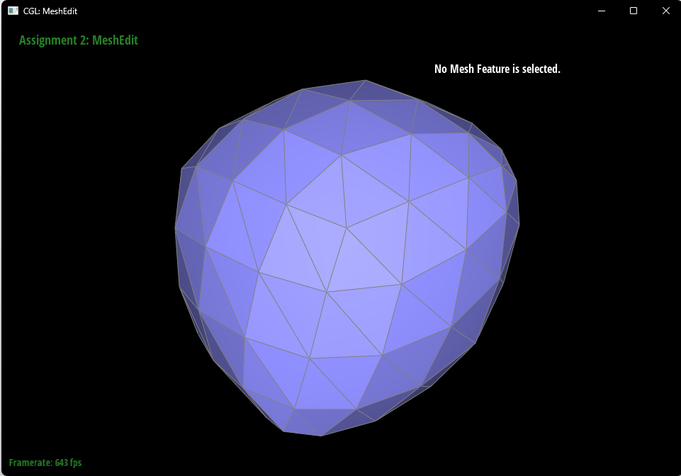
Split
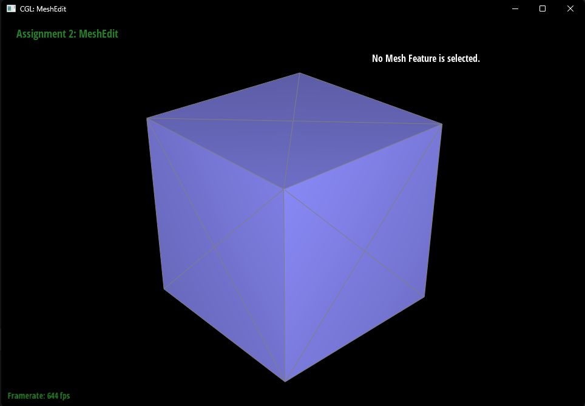
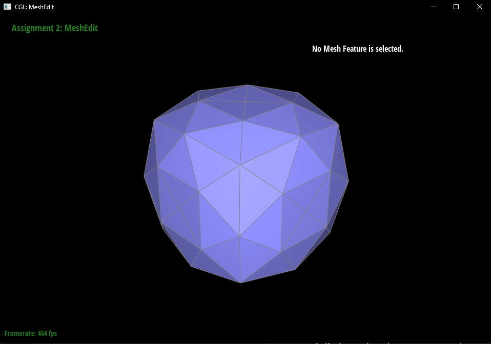
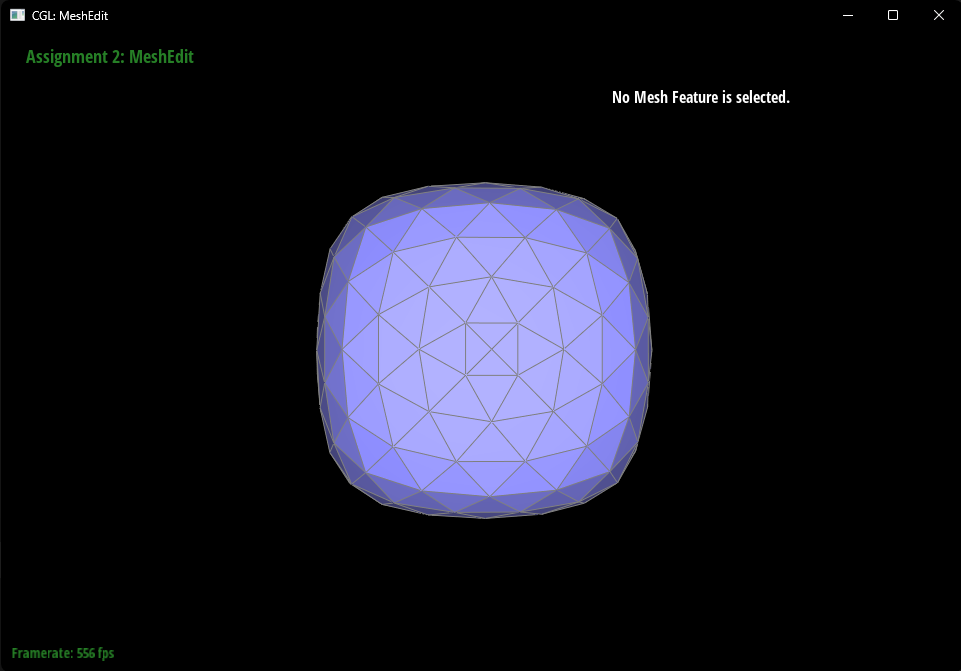